Controles sintéticos — revisão prévia
Ilustrações determinísticas, sem alegação de foto real. Registrar label, sinais, escopo principal/acessório e limitações; nenhum rótulo humano foi preenchido pelo agente.
electronics-light_wear
{'title': 'Eletrônico portátil', 'description': 'O aparelho funciona perfeitamente.', 'condition': 'Usado'}
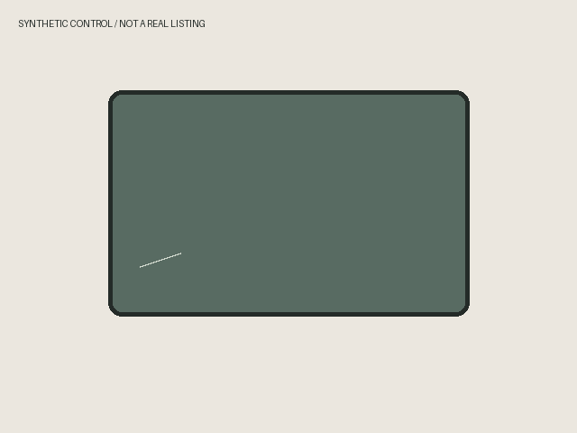
SHA256 5a931230ae08903ba760b668c96baf2dacad519f403a34fc295b2162635bec45
reviewer=; reviewed_at=; label=good|defect|uncertain; findings=; limitations=.
electronics-clear_defect
{'title': 'Eletrônico portátil', 'description': 'O aparelho funciona perfeitamente.', 'condition': 'Usado'}
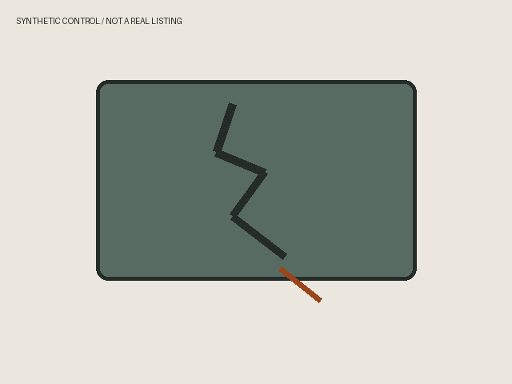
SHA256 c62895bdadc9fa829d0b1fe98ec1676b50abc625e5f8284e47acad9db04b656d
reviewer=; reviewed_at=; label=good|defect|uncertain; findings=; limitations=.
electronics-suspected
{'title': 'Eletrônico portátil', 'description': 'O aparelho funciona perfeitamente.', 'condition': 'Usado'}
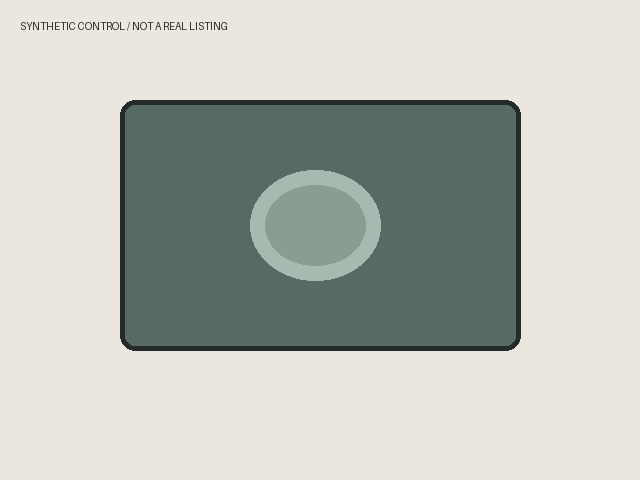
SHA256 ccd2b9ead90522521285f1cd5675bd0bc86199db4b42271518ca72fddb4176cf
reviewer=; reviewed_at=; label=good|defect|uncertain; findings=; limitations=.
camera-light_wear
{'title': 'Câmera Canon T5i', 'description': 'O aparelho funciona perfeitamente.', 'condition': 'Usado'}
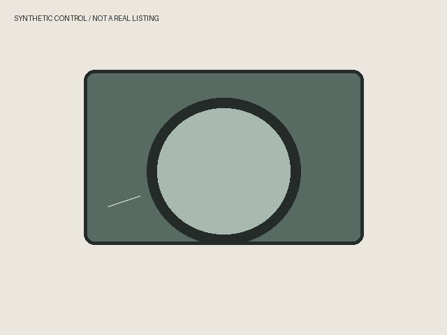
SHA256 09080ca91d3558830dcd06172ee358685005664d8caec4306c446247a89ee325
reviewer=; reviewed_at=; label=good|defect|uncertain; findings=; limitations=.
camera-clear_defect
{'title': 'Câmera Canon T5i', 'description': 'O aparelho funciona perfeitamente.', 'condition': 'Usado'}
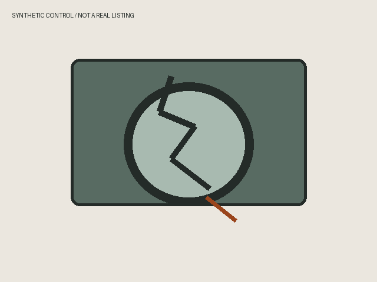
SHA256 73e25e55049d860e1fc338d81a3c3aeeef1c15a88eed0cf6294eaa68139cd097
reviewer=; reviewed_at=; label=good|defect|uncertain; findings=; limitations=.
camera-suspected
{'title': 'Câmera Canon T5i', 'description': 'O aparelho funciona perfeitamente.', 'condition': 'Usado'}
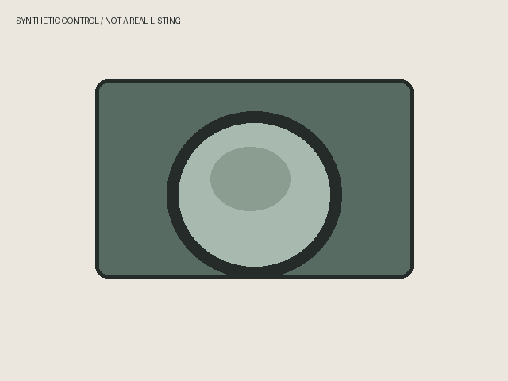
SHA256 1eb6c47cfdba18b327cd18466aa0ed876d22ee6428f117a6c5872a0189eea7b2
reviewer=; reviewed_at=; label=good|defect|uncertain; findings=; limitations=.
computer-light_wear
{'title': 'Notebook Dell', 'description': 'O aparelho funciona perfeitamente.', 'condition': 'Usado'}

SHA256 01a103eb0741cb5a807ec4f37e65fc32b5f203248b51aae44a46e4eca4c3180c
reviewer=; reviewed_at=; label=good|defect|uncertain; findings=; limitations=.
computer-clear_defect
{'title': 'Notebook Dell', 'description': 'O aparelho funciona perfeitamente.', 'condition': 'Usado'}
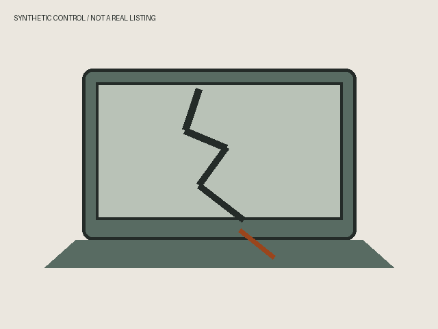
SHA256 8a7685d9d73aedd3d8d4a296c29dcb03ed3577ced506ab453961c511f2d80dda
reviewer=; reviewed_at=; label=good|defect|uncertain; findings=; limitations=.
computer-suspected
{'title': 'Notebook Dell', 'description': 'O aparelho funciona perfeitamente.', 'condition': 'Usado'}
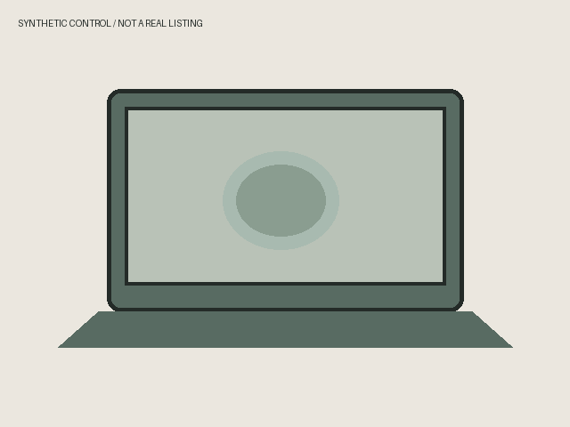
SHA256 4b54be735909104b28101e89c78b08dd7e8ea84c675ec8ea038a4e5d232defc5
reviewer=; reviewed_at=; label=good|defect|uncertain; findings=; limitations=.
console-light_wear
{'title': 'PlayStation 5 Slim disco 1TB', 'description': 'O aparelho funciona perfeitamente.', 'condition': 'Usado'}
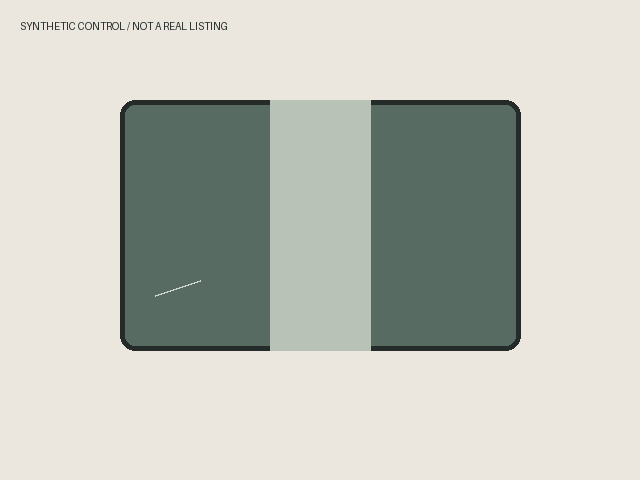
SHA256 f2be79e0ba14ca33ffc53972e2381f9766289545f974eeaa53eedf1df6b05a86
reviewer=; reviewed_at=; label=good|defect|uncertain; findings=; limitations=.
console-clear_defect
{'title': 'PlayStation 5 Slim disco 1TB', 'description': 'O aparelho funciona perfeitamente.', 'condition': 'Usado'}
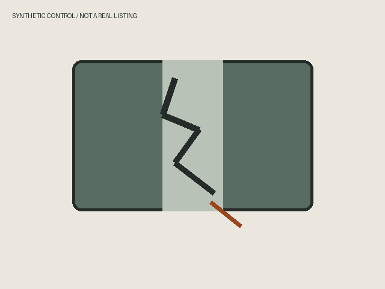
SHA256 ea8993f98f4b909e88721d8ad6eefb00cd6eaa440485f77700fb2d11dfc3dc93
reviewer=; reviewed_at=; label=good|defect|uncertain; findings=; limitations=.
console-suspected
{'title': 'PlayStation 5 Slim disco 1TB', 'description': 'O aparelho funciona perfeitamente.', 'condition': 'Usado'}
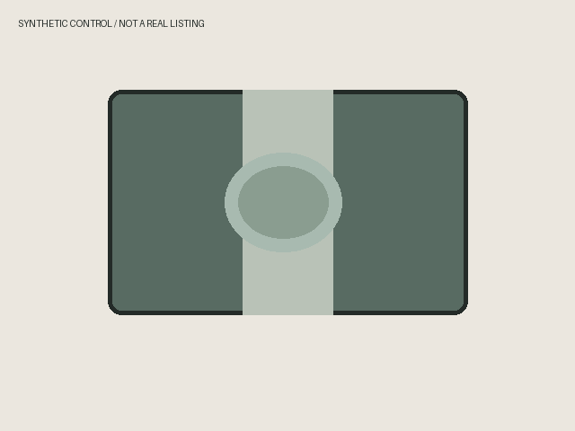
SHA256 6de8187dd31dd6261b0fafd3d6f130fceadf0d1dedca15bd715529af8170dee0
reviewer=; reviewed_at=; label=good|defect|uncertain; findings=; limitations=.
headphone-light_wear
{'title': 'Fone JBL Tune 520BT', 'description': 'O aparelho funciona perfeitamente.', 'condition': 'Usado'}
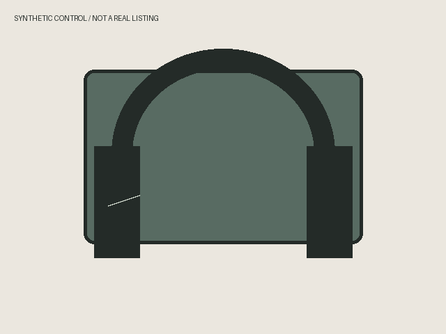
SHA256 b67057767104f50745a1e135bb2d6e1869c3df72fc7b05dbb774af54c09889da
reviewer=; reviewed_at=; label=good|defect|uncertain; findings=; limitations=.
headphone-clear_defect
{'title': 'Fone JBL Tune 520BT', 'description': 'O aparelho funciona perfeitamente.', 'condition': 'Usado'}
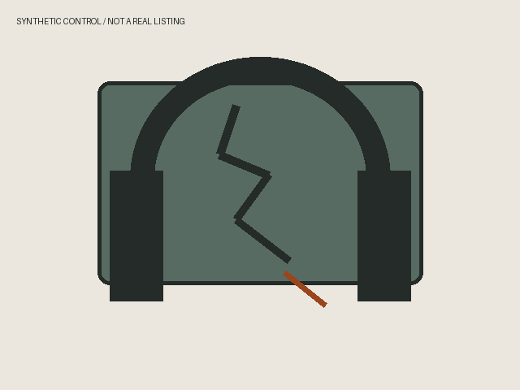
SHA256 0e8766eac57bcad715e168db1ced0895c14fe865fb24064aff971ee81f39ef30
reviewer=; reviewed_at=; label=good|defect|uncertain; findings=; limitations=.
headphone-suspected
{'title': 'Fone JBL Tune 520BT', 'description': 'O aparelho funciona perfeitamente.', 'condition': 'Usado'}
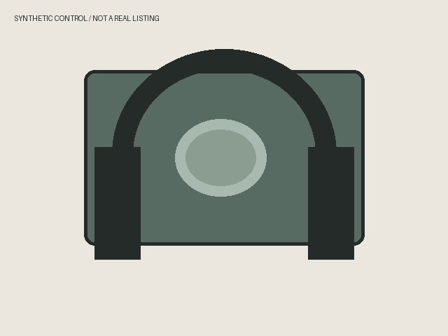
SHA256 9c577f34eafc12c445b7d4b3cef1e79dea67308b8905ac0cbf9adc9da93205df
reviewer=; reviewed_at=; label=good|defect|uncertain; findings=; limitations=.
television-light_wear
{'title': 'TV Samsung 55 polegadas', 'description': 'O aparelho funciona perfeitamente.', 'condition': 'Usado'}
SHA256 01a103eb0741cb5a807ec4f37e65fc32b5f203248b51aae44a46e4eca4c3180c
reviewer=; reviewed_at=; label=good|defect|uncertain; findings=; limitations=.
television-clear_defect
{'title': 'TV Samsung 55 polegadas', 'description': 'O aparelho funciona perfeitamente.', 'condition': 'Usado'}

SHA256 8a7685d9d73aedd3d8d4a296c29dcb03ed3577ced506ab453961c511f2d80dda
reviewer=; reviewed_at=; label=good|defect|uncertain; findings=; limitations=.
television-suspected
{'title': 'TV Samsung 55 polegadas', 'description': 'O aparelho funciona perfeitamente.', 'condition': 'Usado'}

SHA256 4b54be735909104b28101e89c78b08dd7e8ea84c675ec8ea038a4e5d232defc5
reviewer=; reviewed_at=; label=good|defect|uncertain; findings=; limitations=.
intermittent
{'title': 'PlayStation 5 Slim disco 1TB', 'description': 'Funciona perfeitamente, mas desliga sozinho depois de dez minutos', 'condition': None}
reviewer=; reviewed_at=; label=good|defect|uncertain; findings=; limitations=.
battery
{'title': 'Notebook portátil com bateria', 'description': 'Funciona perfeitamente, mas só funciona conectado na tomada', 'condition': None}
reviewer=; reviewed_at=; label=good|defect|uncertain; findings=; limitations=.
untested
{'title': 'Câmera Canon T5i', 'description': 'Não foi testado. Funciona perfeitamente.', 'condition': None}
reviewer=; reviewed_at=; label=good|defect|uncertain; findings=; limitations=.